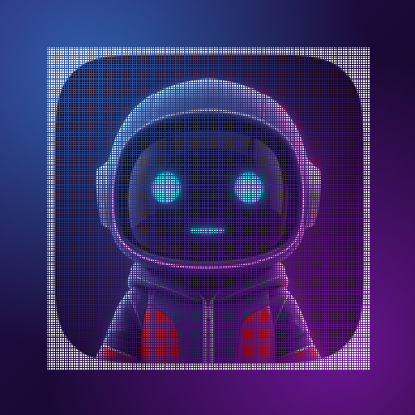
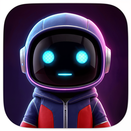

ИИ Мастер - свой ассистент, который сам подбирает инструмент под задачу: пишет и считает, рисует картинки, разбирает твои файлы и снимки, ставит напоминания и ведёт проекты. Работает в браузере и ставится на телефон как обычное приложение.

Сейчас в приложении работает: и всё это - с твоими ключами и на твоём компьютере.
Windows - установщик, Android - файл APK. В магазине RuStore приложение найдётся по названию «ИИ Мастер».
Приложение бесплатно ставится из браузера: иконка на экране, отдельное окно, работа без интернета.
Внутренняя валюта приложения. 1 000 000 Баксов начисляются сразу за регистрацию.
| Пакет | Цена | Баксов | За 1 млн |
|---|---|---|---|
| Бесплатный | 0 ₽ | 1 млн | Бонус за согласие |
| Стартовый | 300 ₽ | 2 млн | 150 ₽ |
| Выгодный | 600 ₽ | 4,2 млн | 143 ₽ |
| Популярный | 1 200 ₽ | 8,8 млн | 136 ₽ |
| Большой | 2 500 ₽ | 18,7 млн | 134 ₽ |
| Мастерский | 5 000 ₽ | 38 млн | 132 ₽ |
Оплата и получение. Оплата проходит прямо на сайте, через защищённый платёжный сервис ЮKassa (банковская карта, СБП и другие способы). Баксы зачисляются на ваш аккаунт сразу после успешной оплаты - отдельно получать или ждать ничего не нужно, доступ открывается в приложении. Чек направляется на указанную почту.